Order flow from first principles
orderflow-engine, study notes for concepts A to H (Phases 1 to 3). Companion to ict-swing-engine.
_est.1. Auction market theory
Price advertises, time regulates, volume validates.
Definition
A market is an auction that looks for the price where both sides are willing to trade. Balance: price rotates in a range, both sides trade, volume is two-sided. Imbalance: one side dominates and price moves to find new counterparties. Initiative activity pushes price away from value (buyers lifting offers at highs). Responsive activity pushes it back (buyers stepping in below value).
Why it matters
It tells you what question to ask of every chart: is this move accepted (time and volume build there) or rejected (price returns fast)?
How to read it
- Price moves with little volume and quick return: advertised, not validated.
- Price holds and volume builds at a new level: accepted, new value.
- One-sided trade (almost all volume on one aggressor side) is an imbalance; two-sided trade is balance.
Common mistakes
- Calling every breakout "initiative" without checking volume or time spent beyond the old range.
- Treating balance as dead: most sessions are balance.
Generated visual
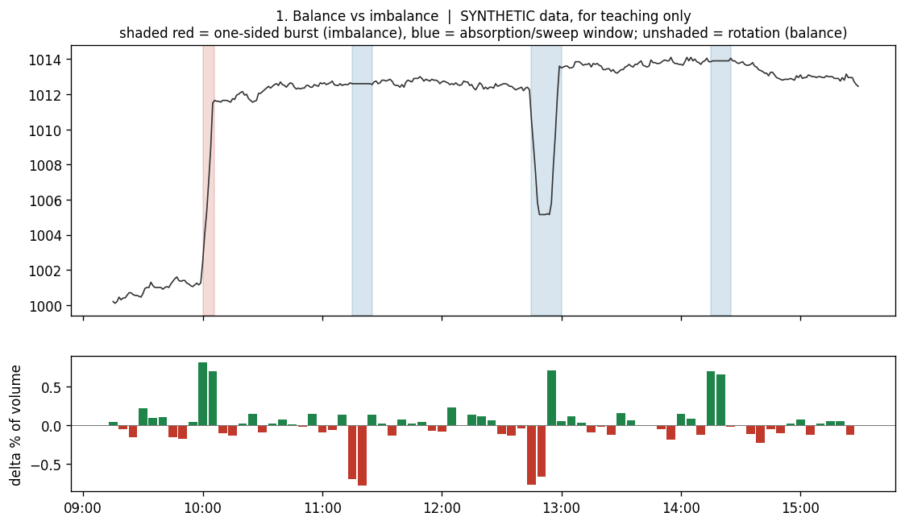
2. The order book (DOM, Level 2)
Definition
The list of resting limit orders: bids (buyers waiting) below, asks (sellers waiting) above. The spread is best ask minus best bid. Depth is the size resting at each level (NSE feeds typically give the best 5 levels; some give 20). Orders at one price fill in price-time priority: earlier orders first.
Why it matters
Resting size is the liquidity price must chew through. Queue position decides whether your limit order gets filled when price only touches your level.
Common mistakes
- Trusting displayed size: NSE disclosed quantity orders show only part of the order, so true size can be larger.
- Assuming the book is the whole story: orders can be cancelled in microseconds.
0.05 in config.yaml is a synthetic/test fallback only.Generated visual
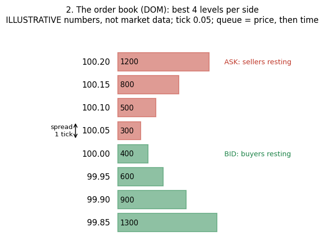
3. Limit orders vs market orders
Limit orders are passive: they rest in the book and provide liquidity. Market orders are aggressive: they trade immediately and take liquidity. A trade happens only when an aggressor meets a resting order.
How to read it
Every print has one aggressor and one passive side. "Volume" alone cannot say who was in a hurry; the aggressor side can.
Common mistakes
- "Buyers and sellers are always equal, so volume is neutral." True in count of shares, false about urgency: that is exactly what delta measures (Phase 2).
Generated visual
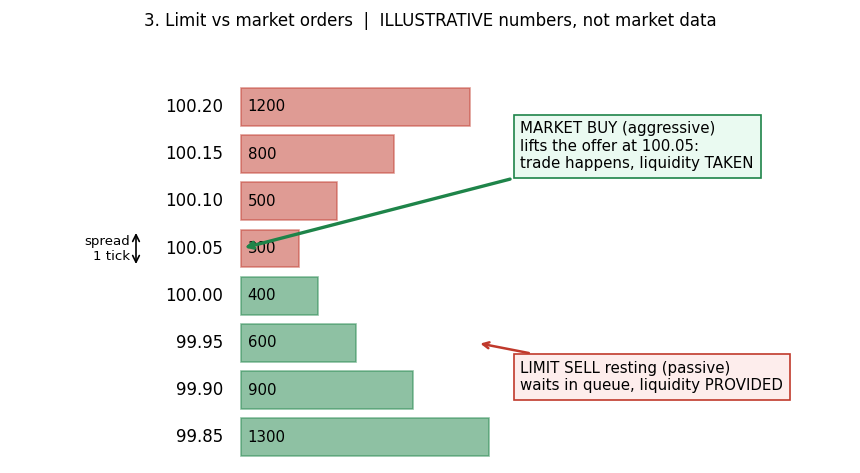
4. Aggressor side
A market buy lifts the offer (trade at the ask, side = +1). A market sell hits the bid (trade at the bid, side = -1). This one label is the base of delta, CVD, footprint and imbalance.
side = +1 -> counted in ask_vol (buyer was aggressive) side = -1 -> counted in bid_vol (seller was aggressive) delta = ask_vol - bid_vol
_est suffix.Generated visual
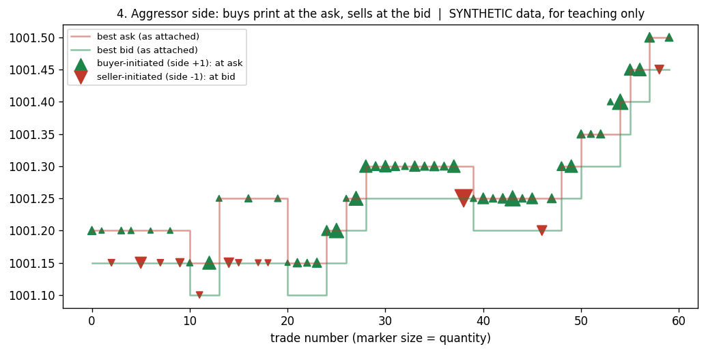
5. Slippage and market impact (try it)
Send a market order into an illustrative ladder (tick = ₹0.05). Bigger orders walk the book and pay more.
| Price | Size | Side |
|---|
shares
Why it matters
Average fill price = Σ(price × size) ÷ Σ size. Slippage = average fill − the price you saw. Costs in config.yaml include slippage_ticks for exactly this.
Common mistakes
- Backtesting at the last price: a market order never fills at the last price for free.
- Ignoring that the book refills or thins as you trade; this ladder is static.
Generated visual

6. Time & Sales (the tape)
The tape is the list of trades: time, price, size (and aggressor side when known). Read for large prints, bursts (many trades in seconds) and speed.
ts price qty side_true bid ask 2026-01-05 09:15:03 1000.05 47 +1 1000.00 1000.05 <- illustrative row
Common mistakes
- Reading one big print as "an institution". It may be a block crossed between two parties or one order split on both sides.
Generated visual
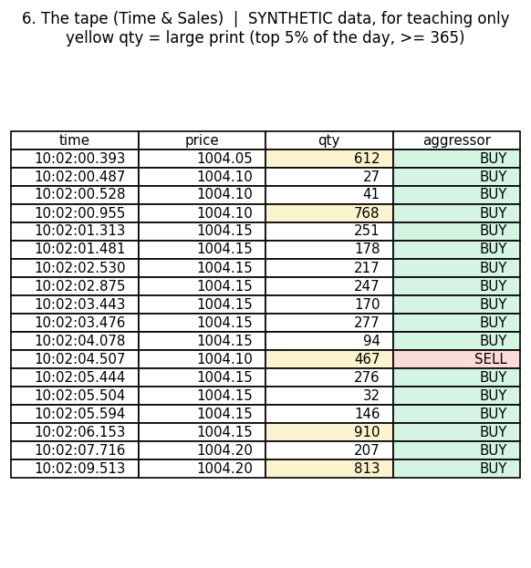
7. Classifying trades without exchange flags
The three rules (all causal: only past and present data)
- Tick rule: price up vs previous trade = buy, down = sell, unchanged = copy the last direction.
- Quote rule: at or above the ask = buy, at or below the bid = sell, inside the spread compare to the midpoint, exactly mid = unclassified.
- Lee–Ready: quote rule first, tick rule for what it cannot decide.
Measured error on the synthetic day (17,014 trades, seed 42)
| method | coverage | accuracy (labelled) | accuracy (volume-weighted) |
|---|---|---|---|
| tick_rule | 99.99% | 92.28% | 93.61% |
| quote_rule | 99.93% | 99.34% | 99.47% |
| lee_ready | 100.00% | 99.33% | 99.53% |
Sensitivity (same generator, different share of stale quotes): the tick rule does not use quotes so it stays at 93.6%; the quote rule falls from 100% with fresh quotes to 98.0% when half the quotes are stale.
Common mistakes
- Treating estimated delta as exact. A 1% label error is small on one trade but can flip the sign of a quiet bar's delta.
- Using the quote of after the trade: that is lookahead. The tests check that classifying a prefix gives the same labels as classifying the whole day.
Generated visual
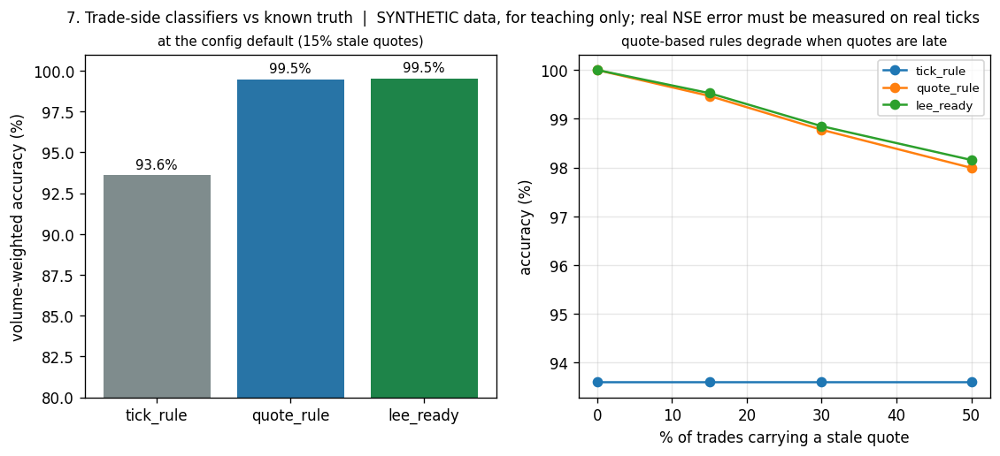
8. Bar-level estimate from OHLCV
When only candles exist (e.g. Yahoo): delta_est = volume × (2·close − high − low) / (high − low). It assumes volume splits by where the close sits in the bar's range.
Measured on the synthetic day (75 five-minute bars): correlation with true delta 0.98, but the sign matches in only 75% of bars. The correlation is inflated by a few huge one-sided bars; the sign agreement on ordinary bars is the more honest number.
Why it is crude
- A bar that dips then closes at the high gets "all buying" even if sellers dominated the dip.
- It cannot see inside the bar, so absorption (heavy volume, no progress) is invisible: range is small, so the ratio is unstable.
- Zero-range bars divide by zero and must be skipped.
delta_est. This is the free-data fallback, not the real thing.Generated visual
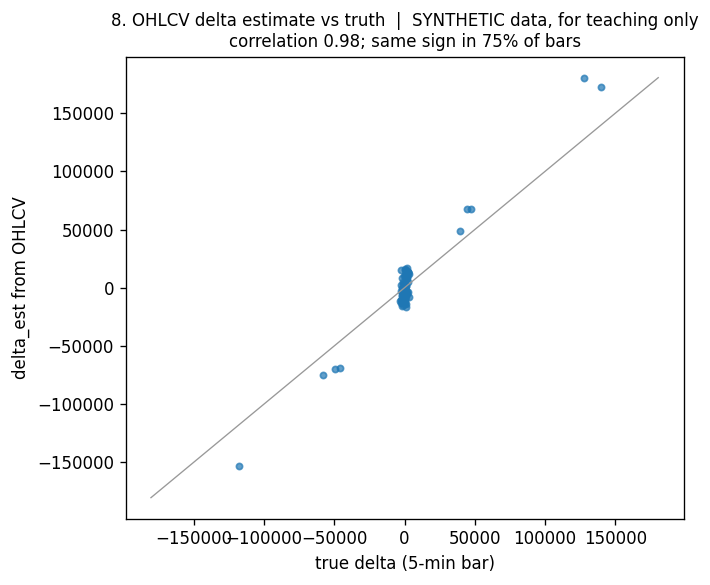
Footprint demo (synthetic, labelled sweep)
Each cell is bid × ask volume at that price, 5-minute bars, true aggressor side from the generator. Black box = highest-volume row.

How to read it
- 12:45 bar: sellers aggress at every price on the way down (red cells, Δ strongly negative).
- 12:50 bar: at the low, a huge bid-side volume and no further price progress: absorption, passive buyers soak up the selling.
- 12:55 bar: buyers take over and the price returns up: the reversal.
This is a planted event in synthetic data, so detecting it proves the machinery, not that real markets behave this way.
9. Delta per bar
Who was more aggressive inside the bar?

Definition
delta = ask volume (buyer-initiated) - bid volume (seller-initiated). delta % = delta / volume. We also keep the running-delta maximum and minimum inside the bar and the delta of trades printed exactly at the bar's high and low.
Why it matters
Two bars with the same close can hide very different fights. A bar that closes up with negative delta was pushed up by passive buyers while sellers hit the bid.
How to read it
- Look at sign and size of delta % first, then compare with the bar's price move.
- Whiskers (running max/min) show how much the bar swung before settling.
- Delta at the high negative = sellers were hitting the bid up there.
Common mistakes
- Reading delta without volume context: 500 shares of delta can be huge or nothing.
- Treating estimated delta (`delta_est`) as exact.
10. Cumulative volume delta (CVD) and divergence
Running total of delta, reset each session.
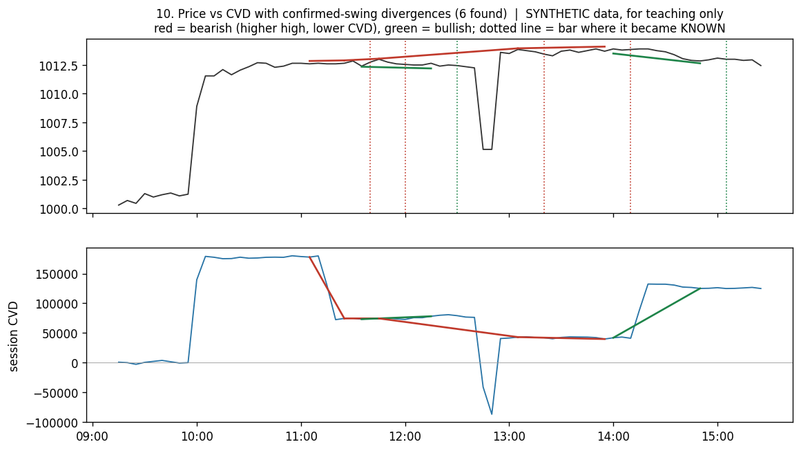
Definition
CVD is the running sum of bar delta. A bearish divergence: price makes a higher swing high but CVD makes a lower high. Bullish: lower swing low, higher CVD low. Swings are only confirmed `swing_right` bars later, so a divergence is stamped at the confirming bar, never at the swing itself.
Why it matters
It asks whether new price extremes were driven by aggressive flow or just drifted there.
How to read it
- Find two consecutive confirmed swings of the same kind in the same session.
- Compare price and CVD at those swings.
- Act only from the confirmation bar onward (dotted line on the chart).
Common mistakes
- Marking swings with hindsight (the most common backtest error).
- Assuming a divergence means reversal: it often just means a pause.
11. Delta flip, exhaustion and delta without progress
Aggression that changes sign, or that goes nowhere.
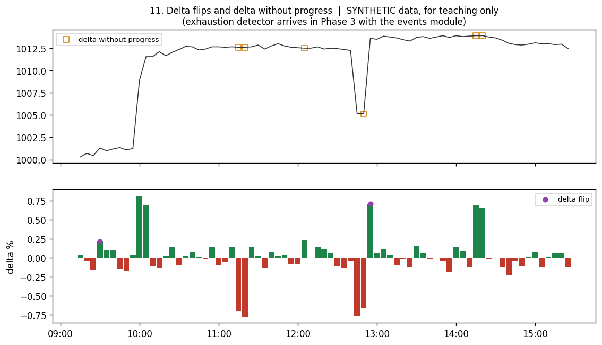
Definition
Delta flip: delta % changes sign from one bar to the next with both bars above a minimum size. Delta without progress: large one-sided delta but price barely moves in that direction (close - open no more than a few ticks). Exhaustion (aggression dries up at an extreme) needs the events module in Phase 3.
Why it matters
Progress without delta is a thin move; delta without progress hints that someone is absorbing the aggression.
How to read it
- Orange squares: big delta, price stuck.
- Purple dots: delta changed side.
- Judge both against what price did next, only on confirmed bars.
Common mistakes
- Calling every flip a reversal; in noise, delta flips constantly.
- Ignoring that thresholds (in `config.yaml`) decide how many you see.
12. Reading a footprint cell
Bid x ask at every price, in three views.
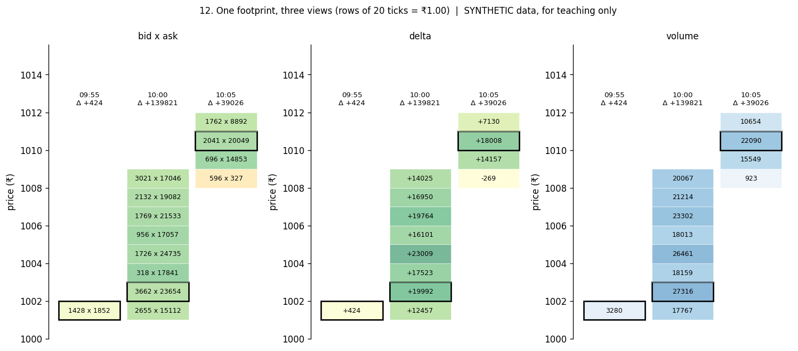
Definition
A footprint splits each bar's volume by price. Each cell shows bid volume (sellers hit the bid) x ask volume (buyers lifted the offer). The delta view shows ask - bid per cell; the volume view shows the total.
Why it matters
It is the same trades as the candle, but now you can see where inside the bar the fight happened.
How to read it
- Bid x ask view: green-ish cell = buyers more aggressive at that price.
- Delta view: find where the bar's delta was earned.
- Volume view: find the heavy prices.
Common mistakes
- Using too-fine rows so every cell looks empty (choose a row size that matches the bar's range).
13. POC and value area per bar
Where most of the bar's volume traded.
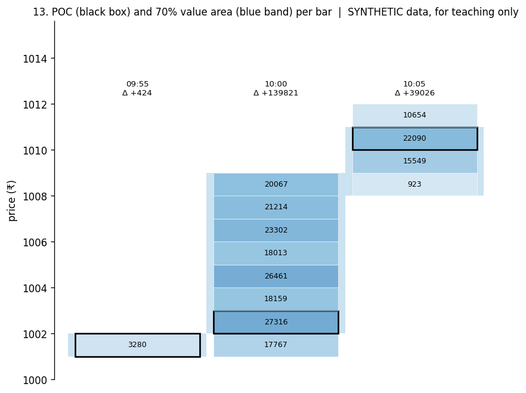
Definition
POC = the price row with the most volume (ties go to the row nearest the middle). Value area = the rows around the POC holding 70% of the volume, built by expansion: compare the next two rows above with the next two below, add the larger pair, repeat.
Why it matters
The bar's value tells you which prices were accepted; trades far outside were rejected.
How to read it
- Black box = POC.
- Blue band = value area.
- A bar closing outside its own value area is worth a look.
Common mistakes
- Confusing the value-area share (about 70%) with a fixed price distance.
14. Diagonal and stacked imbalances
Aggression that the other side could not match.
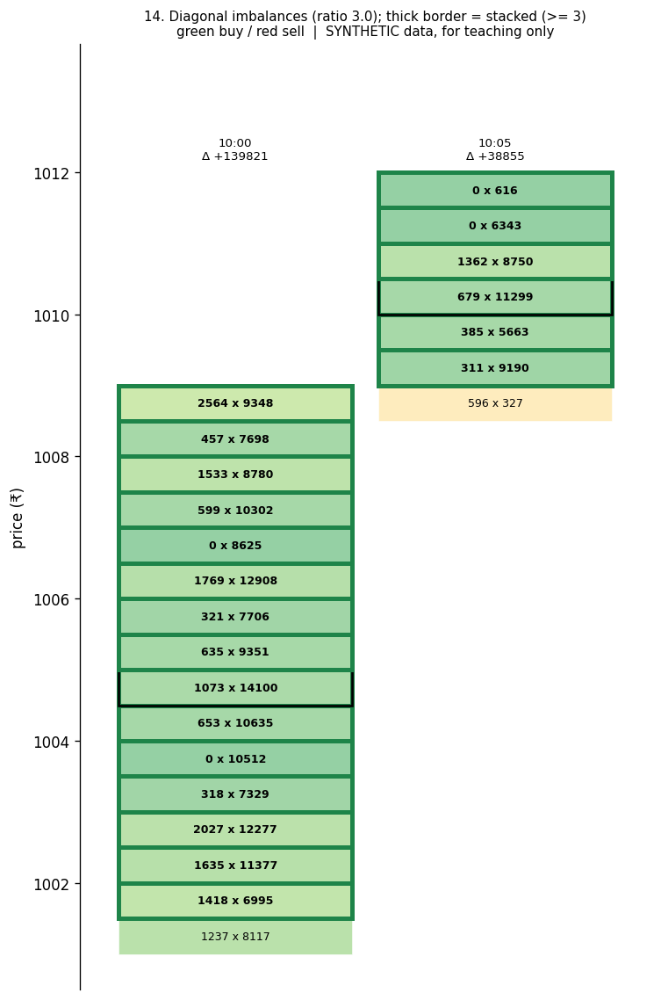
Definition
Buy imbalance at row P: ask[P] >= ratio x bid[P - 1 row] and ask[P] >= a minimum volume. Sell imbalance at P: bid[P] >= ratio x ask[P + 1 row] and bid[P] >= the minimum. Default ratio 3.0. The comparison is diagonal because a buyer at P is lifting orders that were resting one row above the bid at P-1. Stacked = at least 3 consecutive rows with the same-side imbalance.
Why it matters
Stacked imbalances mark zones of one-sided aggression that may later act as support or resistance. That is a hypothesis to test, not a fact.
How to read it
- Thin border = single imbalance, thick = stacked.
- Zero on the opposite side counts if the minimum volume is met.
- The lowest row has no buy test and the highest has no sell test.
Common mistakes
- Reading single imbalances as signals: they are common.
- Forgetting the minimum-volume filter.
15. Finished vs unfinished auctions
Did the auction end at the extreme, or is business left there?
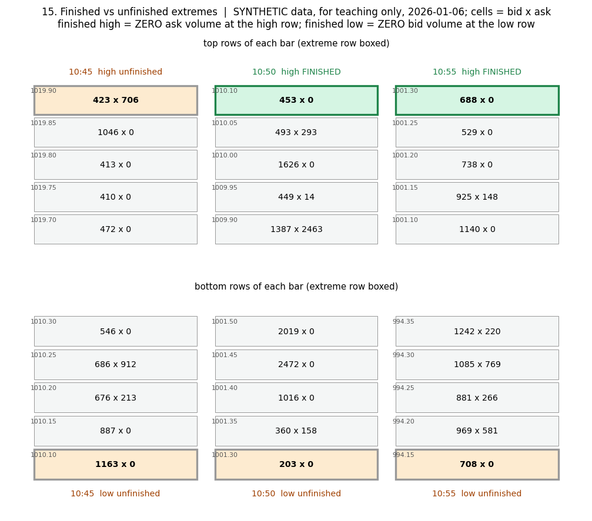
Definition
Finished high = zero ask volume at the high row (nobody was still lifting offers up there). Finished low = zero bid volume at the low row. If volume traded on that side at the extreme, the auction is unfinished and the level may be revisited. In footprint terms an unfinished extreme is a poor high or low (the TPO version is separate, concept 20).
Why it matters
It is a rule of thumb for which extremes might be retested. The retest idea is a hypothesis for Phase 6.
How to read it
- Look only at the extreme rows (this page shows just those).
- Header of each bar: FINISHED or unfinished.
- Row size changes the answer: coarser rows are less likely to be finished.
Common mistakes
- Treating 'unfinished' as a guaranteed retest.
16. Absorption
Heavy aggressive volume, no price progress.
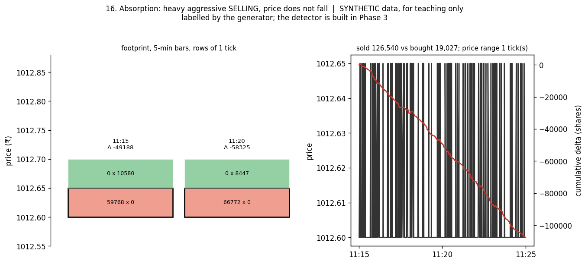
Definition
Passive orders soak up aggressive flow at a level, so price does not move even though plenty trades. Exhaustion is the opposite: aggressive volume dries up at an extreme.
Why it matters
Absorption at a known level is the core of the reversal setups (Phase 6).
How to read it
- Big one-sided delta, tiny price range.
- Look at who is passive: sellers absorbed here would show as bid volume repeatedly refilled.
Common mistakes
- Calling every quiet high-volume bar absorption: you need the aggressive side to be one-sided.
17. Trapped traders
Aggression at an extreme, then reversal.
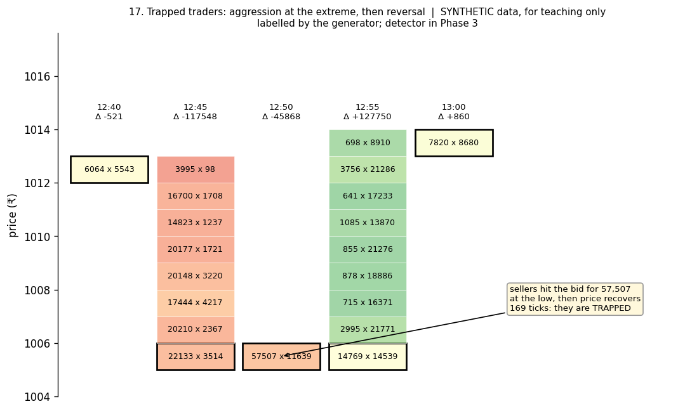
Definition
Traders who aggressed at the extreme are now on the wrong side: sellers who hit the bid at the low when price reverses up are trapped; their stops/covering fuel the move.
Why it matters
It explains why sweeps can reverse sharply.
How to read it
- Find the extreme row with heavy aggressive volume.
- Check price leaving the level and not returning.
Common mistakes
- Inferring 'trapped' from price alone: you need the aggressive volume at that level.
18. Volume profile
Volume by price instead of by time.
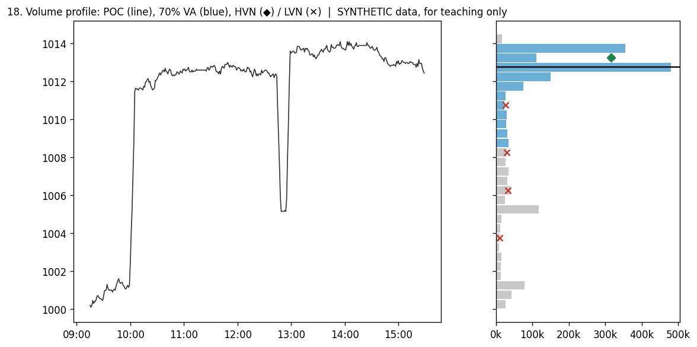
Definition
POC = most-volume row; value area = 70% of volume built by expansion from the POC; VAH/VAL = its upper/lower rows (we label rows by their lower edge); HVN/LVN = peaks and valleys of a smoothed profile.
Why it matters
HVNs act like magnets (acceptance), LVNs like air pockets (price moves through them fast): hypotheses to test.
How to read it
- Where is the POC relative to the range?
- Is price inside or outside the value area?
- LVN between two HVNs: expect quick travel.
Common mistakes
- Mixing profiles of different time ranges without saying so.
19. Profile shapes
P, b, D, thin and double distribution.
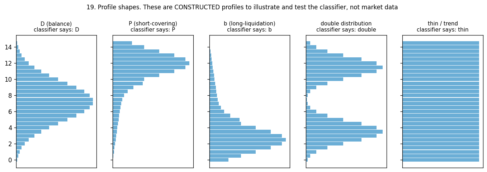
Definition
P: volume concentrated high (short covering / buying). b: concentrated low (long liquidation / selling). D: symmetrical balance. Thin/trend: flat, no clear POC. Double: two separated peaks.
Why it matters
Shape is a quick description of the day's auction.
How to read it
- Check where the POC sits and where the volume mass is.
- Two peaks with a thin valley = two value areas.
Common mistakes
- Over-trusting a label: the classifier is a heuristic with thresholds in config.
20. Market profile (TPO)
Price by time, in 30-minute letters.
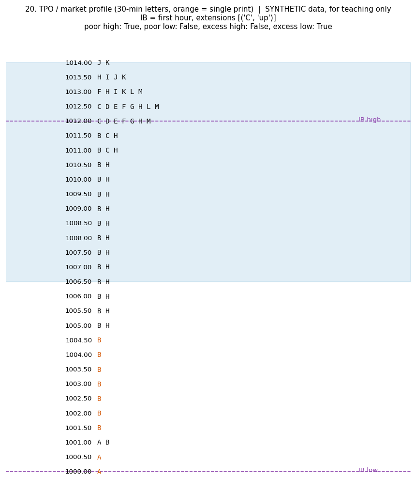
Definition
Each 30-minute period gets a letter (A, B, C...). A row's letters show which periods traded there. Initial balance (IB) = the first hour's range. Range extension = price trading outside the IB. Single prints = rows with one letter. Poor high/low = the extreme row has two or more letters (retested). Excess/tail = at least two single-print rows at the extreme.
Why it matters
TPO shows time spent at each price, which volume profile hides.
How to read it
- Orange = single print (fast travel).
- Compare the day to the IB: which side extended and when.
- Poor extremes may be revisited; excess suggests rejection (hypotheses).
Common mistakes
- Using letters from an unfinished period for decisions.
21. Session, composite and naked POCs
Profiles over longer ranges.
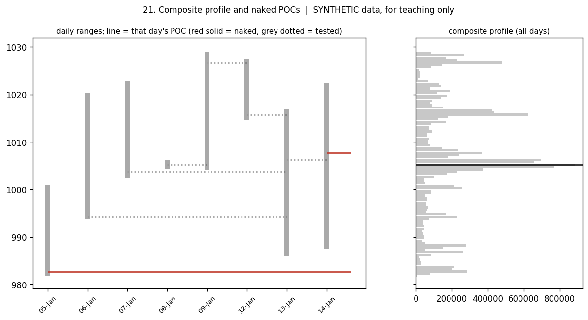
Definition
Session profile = one day. Composite = several days combined. Fixed range = any start/end you choose. A naked POC is a past session's POC that no later session has traded through.
Why it matters
Untested POCs are watch levels; whether price is drawn to them is a hypothesis for Phase 6.
How to read it
- Grey dotted = a POC that was later tested; red solid = still naked.
- Composite POC shows where most volume traded across days.
Common mistakes
- Counting the most recent day's POC as 'naked' evidence: it simply has not had time to be tested.
22. Rules of thumb to TEST, not believe
80% value-area rule, open types, gap fills.

Definition
Open types (open-drive, open-test-drive, open-rejection-reverse, open-auction) are classified from the first 30 minutes with explicit rules in `config.yaml`. The 80% rule (a day that opens outside value, re-enters it and is accepted tends to rotate across it) and gap-fill tendencies are listed here as hypotheses; their test harness belongs to Phase 6.
Why it matters
Traders repeat these as facts. This repo makes them measurable.
How to read it
- Top row: constructed paths that the rules classify correctly (unit-tested).
- Bottom row: synthetic days.
Common mistakes
- Believing a rule because it sounds right; the sample size and out-of-sample result decide.
23. VWAP, anchored VWAP and bands
The volume-weighted average price.
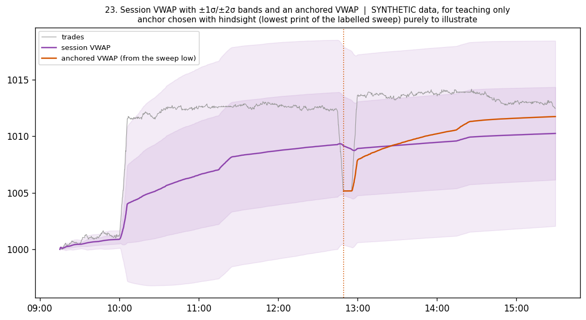
Definition
Session VWAP = cumulative (price x volume) / cumulative volume since the open; it restarts every day. Anchored VWAP starts at a chosen event (swing, gap, news). Bands are +/- k volume-weighted standard deviations of price around VWAP.
Why it matters
Institutions are often benchmarked to VWAP, so it is a widely watched reference. Why price reacts to it is a hypothesis.
How to read it
- Price above VWAP and rising VWAP: buyers in control of the average.
- Anchored VWAP from a swing: the average price of everyone who traded since.
Common mistakes
- Anchoring with hindsight (the chart does exactly that, only to illustrate; real signals must anchor at an already-confirmed event).
- Expecting bands to behave like a fixed percentage.
24. Liquidity heat map
Resting size per price, over time.
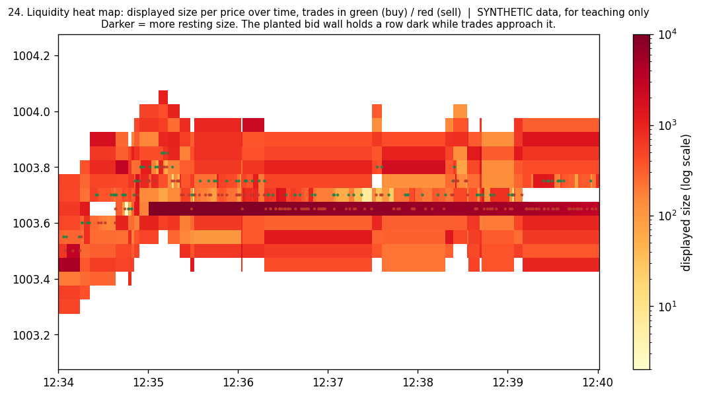
Definition
Each column is a book snapshot; colour is the displayed size at each price (log scale). Trades are drawn on top. Only the best 5 levels per side are recorded, so anything deeper is invisible.
Why it matters
It shows where resting liquidity sat when trades arrived: a dark row that trades keep touching is a wall being tested.
How to read it
- Dark horizontal band = large resting order.
- If trades eat into the band and it thins, it is being consumed; if it vanishes with no trades, it was pulled.
Common mistakes
- Reading displayed size as intent. Orders can be cancelled at any time.
- Forgetting that hidden (iceberg) size does not show.
25. Iceberg (disclosed-quantity) orders
Small displayed size, large executed size.
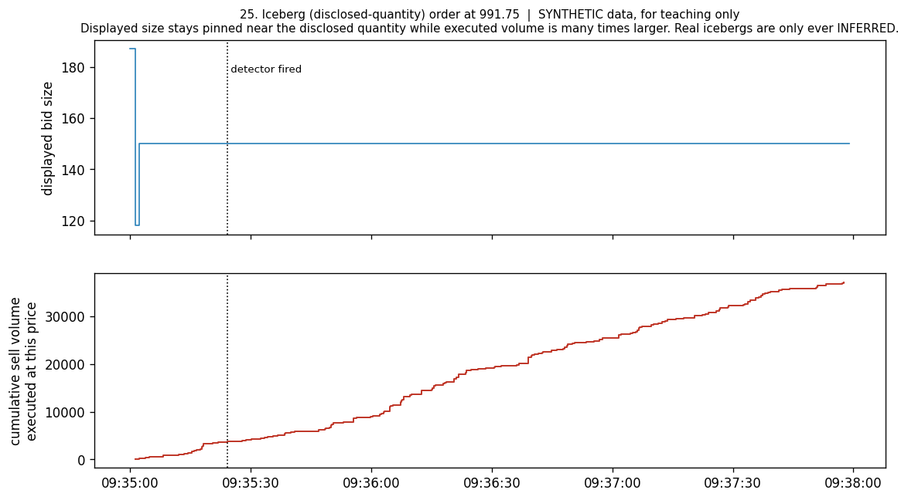
Definition
NSE allows a disclosed quantity: only part of an order is shown and the rest refills after each fill. The detector flags a price where, within a run, refills repeat, executed volume is at least 5x the largest displayed size and the refilled sizes are nearly constant.
Why it matters
A level that keeps absorbing sells without its displayed size shrinking suggests a larger hidden buyer. This is an inference, never a certainty.
How to read it
- Top: displayed size stays near the disclosed quantity.
- Bottom: cumulative executed volume at that price keeps climbing far beyond it.
Common mistakes
- Calling every busy level an iceberg: stale snapshots and ordinary liquidity can look similar.
- Trading it as a signal without testing it.
26. Spoofing: recognition only
Large size that appears and disappears without trading.
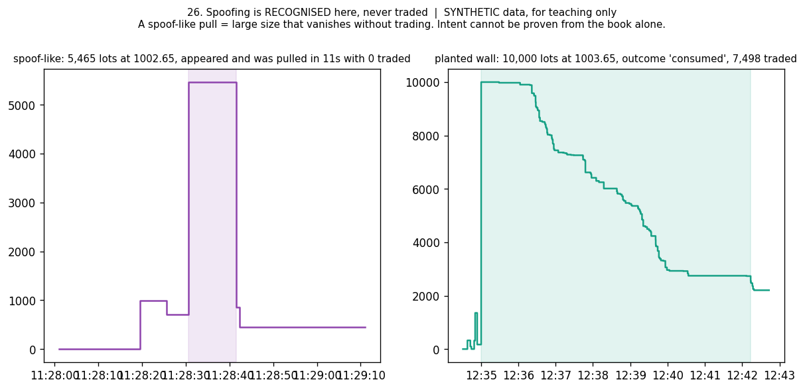
Definition
A spoof-like pull is a large resting order that is cancelled within a short life with almost nothing traded against it. The right panel shows a genuine wall for contrast: it sits, is consumed, and trades against it.
Why it matters
Knowing the pattern prevents mistaking a vanishing wall for real support or resistance. Spoofing is illegal; this repo recognises the pattern and never trades it.
How to read it
- Large size, short life, near-zero traded = spoof-like.
- Large size, long life, traded against = a real wall being tested.
Common mistakes
- Claiming intent: a cancelled order is not proof of manipulation.
- Using the flag as a signal.
27. Depth imbalance
Which side has more resting size near the touch.
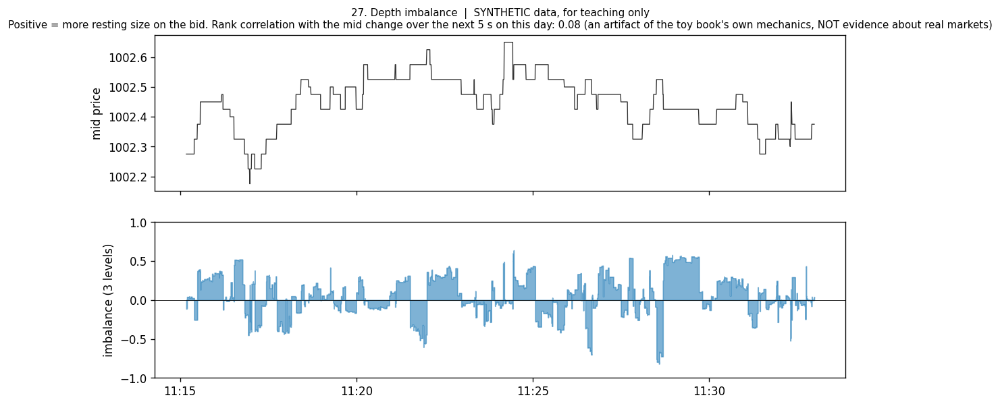
Definition
(bid size - ask size) / (bid size + ask size), summed over the best N levels (N = 3 in config.yaml). It ranges from -1 (all ask) to +1 (all bid).
Why it matters
A common idea is that a heavy bid supports price. Whether that predicts anything is an empirical question, and the displayed book can be pulled.
How to read it
- Positive = more bid size; negative = more ask size.
- Check it against what happens next on real data before believing it.
Common mistakes
- Treating it as a prediction. On this toy day its 5-second rank correlation with the next mid move is 0.08, which comes from the toy book's own mechanics.
- Ignoring that spoofed size inflates it.
Event detectors and how well they were scored
Absorption, exhaustion, trapped traders, delta flip, large prints, walls, icebergs.
Definition
Each detector is a plain rule in orderflow/events.py or orderflow/book.py with thresholds in config.yaml. They only use data up to the moment they fire (prefix-tested).
Why it matters
A rule that sounds right is not a rule that works. Scoring against planted labels at least shows whether each rule finds what it claims to find.
How to read it
- Recall: labelled events found. Precision: detections that matched a label.
- Intervals are Wilson 95%; small samples are flagged.
Common mistakes
- Reading these as market performance. The generator and the detectors share one author's assumptions, so this is a consistency test only.
- Ignoring the weak ones: delta flip precision is about 0.17.
| detector | labelled | found | recall | recall_ci95 | detections | true_pos | precision | precision_ci95 | note |
|---|---|---|---|---|---|---|---|---|---|
| large_print | 100 | 89 | 0.89 | 0.81-0.94 | 154 | 89 | 0.58 | 0.50-0.65 | |
| absorption | 21 | 21 | 1.00 | 0.85-1.00 | 53 | 53 | 1.00 | 0.93-1.00 | |
| iceberg | 19 | 11 | 0.58 | 0.36-0.77 | 11 | 11 | 1.00 | 0.74-1.00 | small sample |
| exhaustion | 16 | 16 | 1.00 | 0.81-1.00 | 23 | 20 | 0.87 | 0.68-0.95 | small sample |
| trapped | 11 | 5 | 0.45 | 0.21-0.72 | 8 | 6 | 0.75 | 0.41-0.93 | small sample |
| delta_flip | 11 | 7 | 0.64 | 0.35-0.85 | 40 | 7 | 0.17 | 0.09-0.32 | small sample |
| wall | 18 | 18 | 1.00 | 0.82-1.00 | 351 | 192 | 0.55 | 0.49-0.60 | small sample |
| spoof_like | 174 | 158 | 0.91 | 0.86-0.94 | 344 | 158 | 0.46 | 0.41-0.51 |
Coming next
Phase 4: EOD swing flow, live recorder, setups and backtests with honest results (including the rules of thumb above), ICT bridge, Pine indicator. Book analytics, EOD swing flow, live recorder, setups and backtests with honest results, ICT bridge, Pine indicator.